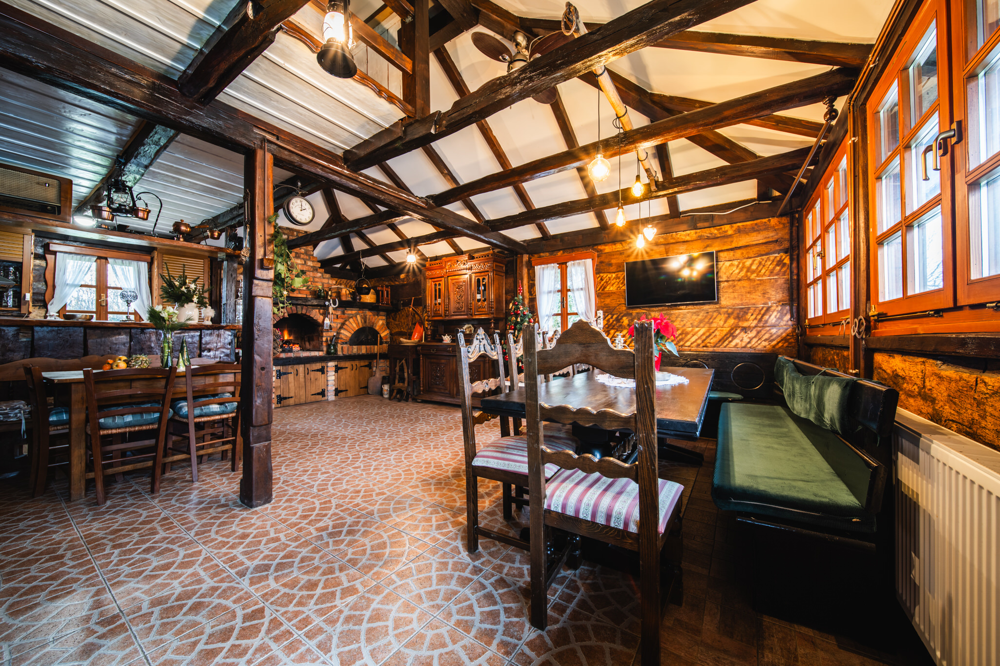

Naša priča
Rustica Verde je stara zagorska kuća obnovljena za odmor — hrastove grede, kameno ognjište i vrt koji se širi sve do šume. Mjesto za obitelji i grupe prijatelja koje traže mir i bijeg od gradske svakodnevice.
O objektu
Smještena u mirnoj Breznici, samo 46 km od Zagreba. Vikendica spaja duh starih zagorskih kuća s modernim sadržajima: bazen, sauna, bilijar, fitness, roštilj i dječje igralište osiguravaju da se nikad ne dosadite.
U blizini: pješačke staze, biciklističke rute, rijeke i lokalni restorani s domaćom tradicijskom kuhinjom.

Osnovni podaci
- 3 spavaće sobe
- 2 kupaonice
- Kapacitet: do 10 osoba
- 46 km od Zagreba